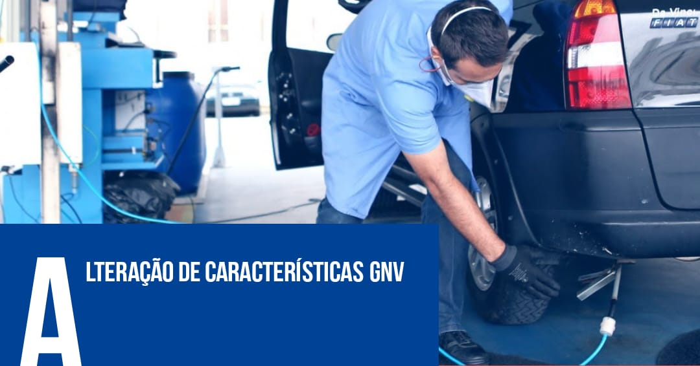

Precisando de agilidade e expertise nos trâmites com o DETRAN RJ? Conheça Adriana Despachante, a sua parceira confiável para todas as suas necessidades veiculares no Rio de Janeiro! Não deixe que a burocracia te impeça de aproveitar o que realmente importa. Com Adriana Despachante ao seu lado, você terá acesso a um serviço personalizado e eficiente, simplificando todos os processos junto ao DETRAN. Nossa equipe está pronta para lidar com documentos, renovações, transferências e mais, para que você possa desfrutar do seu veículo sem dores de cabeça. Adriana e sua equipe são especialistas no sistema do DETRAN RJ. Com anos de experiência e um profundo conhecimento dos regulamentos em vigor, estamos prontos para orientar você em cada etapa do caminho. Evite longas filas, atrasos e frustrações – deixe-nos cuidar de todos os detalhes para você. A sua conveniência é a nossa prioridade. Agendaremos e acompanharemos compromissos, garantindo que você economize tempo e evite complicações. Seja a renovação da CNH, a regularização do seu veículo ou qualquer outro serviço relacionado ao DETRAN, Adriana Despachante está aqui para simplificar o processo e aliviar o seu estresse. Confiança e transparência são fundamentais em nossa abordagem. Adriana Despachante mantém você informado em cada passo, garantindo que você tenha total visibilidade sobre o status dos seus processos. Nossos clientes confiam em nossa integridade e compromisso em fornecer resultados excepcionais. Não importa onde você esteja no Rio de Janeiro, Adriana Despachante está pronta para ajudar. Com atendimento personalizado e um compromisso inabalável com a excelência, estamos prontos para ser a sua solução de confiança para todas as suas necessidades no DETRAN RJ. Simplifique, agilize e descomplique com Adriana Despachante! Entre em contato hoje mesmo e descubra como podemos fazer a diferença para você. Seus trâmites com o DETRAN nunca foram tão fáceis!
Você está procurando economizar dinheiro com combustível e ao mesmo tempo ser mais amigo do meio ambiente? A solução está aqui: a conversão para Gás Natural Veicular (GNV)! Com o GNV, você pode transformar seu veículo para funcionar com um combustível mais econômico e limpo, ajudando a reduzir os gastos com combustível e a emissão de poluentes. Imagine economizar nos postos de gasolina e ainda contribuir para um ar mais limpo. O processo é simples: Planejamento e Projeto: Nossos especialistas elaborarão um projeto personalizado para a conversão do seu veículo. Instalação Profissional: Nosso time qualificado realizará a instalação do kit GNV, garantindo a segurança e a eficiência. Inspeção e Aprovação: O veículo passará por uma inspeção técnica para certificar-se de que tudo está em ordem, e você receberá a aprovação. Atualização de Documentos: Cuidamos de toda a burocracia para que seus documentos estejam atualizados e corretos. Vistorias Periódicas: Nossa equipe estará à disposição para as vistorias regulares, mantendo seu veículo em ótimas condições. Não perca mais tempo! Faça a mudança para o GNV agora mesmo e comece a colher os benefícios de uma condução mais econômica e sustentável. Entre em contato conosco para saber mais e dar o primeiro passo rumo a uma condução inteligente e responsável com o meio ambiente!
Você está comprando ou vendendo um veículo usado? Deixe-nos cuidar de todo o processo de transferência de propriedade para você. Nossos especialistas orientarão você passo a passo, desde a documentação até a emissão do novo Certificado de Registro de Veículo (CRV). Evite dores de cabeça e economize tempo - confie em nossa experiência para garantir uma transferência tranquila e legal. Reconhecimento de Jurisprudência: Precisa de orientação jurídica sólida para o seu caso? Nossa equipe é especializada em analisar precedentes judiciais e pode ajudar a fundamentar o seu argumento com base em decisões passadas relevantes. Seja qual for o seu problema legal, podemos usar nossa experiência em jurisprudência para oferecer insights valiosos e embasar sua abordagem. Nossa equipe está pronta para simplificar processos complexos e tornar sua vida mais fácil. Entre em contato conosco hoje mesmo e descubra como podemos ajudar você a alcançar seus objetivos de transferência de propriedade de veículo ou reconhecimento de jurisprudência. Sua satisfação é nossa prioridade número um!
Intenção de Venda Pretendendo vender seu veículo? A intenção de venda é o primeiro passo importante. Ao comunicar sua intenção, você está sinalizando seu desejo de transferir a propriedade do veículo. Isso permite que você inicie o processo legal e garanta que todas as partes estejam cientes da transação iminente. Comunicação de Venda: A comunicação de venda é um procedimento crucial ao vender um veículo usado. É o ato de notificar oficialmente as autoridades de trânsito sobre a transferência de propriedade. Ao preencher esse formulário, você informa ao Detran ou órgão de trânsito local que não é mais o proprietário legal do veículo, evitando assim responsabilidades futuras. Passos Básicos: Intenção de Venda: Decida vender o veículo e comece a preparar a documentação necessária. Comunicação de Venda: Preencha o formulário de Comunicação de Venda, disponível no Detran ou online. Documentação: O comprador também assina o formulário e obtém cópias dos documentos necessários (RG, CPF, comprovante de residência). Finalização: Após a venda, o vendedor entrega uma cópia autenticada da Comunicação de Venda ao comprador e envia outra cópia ao Detran. Transferência: O comprador realiza a transferência de propriedade no Detran, finalizando o processo. Garanta uma venda tranquila e evite futuras complicações. A intenção e a comunicação de venda são etapas cruciais para garantir a transparência e a legalidade em todo o processo de transferência de veículo. Lembre-se de verificar os requisitos específicos do seu estado para garantir conformidade total.
Mudança de Placa de Veículo: Quer atualizar a placa do seu veículo? Aqui está um resumo do processo: Motivo da Mudança: Determine a razão para a mudança de placa. Pode ser devido a troca de município, estado, ou outras circunstâncias. Documentação Necessária: Prepare os documentos exigidos, incluindo RG, CPF, comprovante de residência, CRV (Certificado de Registro de Veículo) e/ou CRLV (Certificado de Registro e Licenciamento do Veículo) originais. Escolha da Nova Placa: Verifique a disponibilidade e escolha a nova combinação alfanumérica da placa, de acordo com as regras do órgão de trânsito. Solicitação no Detran: Vá até uma unidade do Detran ou acesse o site do órgão para solicitar a mudança de placa. Preencha os formulários e pague as taxas necessárias. Vistoria e Aprovação: Dependendo das regras locais, talvez seja necessário realizar uma vistoria do veículo para garantir que ele esteja em conformidade com as regulamentações de trânsito. Emissão da Nova Placa: Após a aprovação, a nova placa será emitida e você receberá um novo CRV com os detalhes atualizados. Atualização de Documentos: Atualize seu CRLV com a nova placa e mantenha os documentos originais e cópias em mãos. Lembre-se de que os procedimentos específicos podem variar de acordo com as regulamentações do seu estado. Verifique as informações do Detran local para garantir uma mudança de placa suave e sem complicações.
Se você tiver alguma dúvida ou precisar de assistência, fique à vontade para entrar em contato conosco. Nossa equipe está pronta para ajudar!